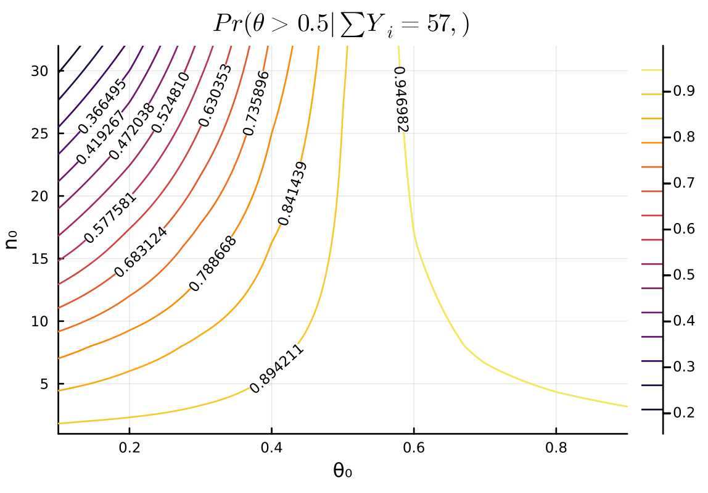

Exercise 3.2 Solution Example - Hoff, A First Course in Bayesian Statistical Methods
標準ベイズ統計学 演習問題 3.2 解答例
Table of Contents
Answer
θ₀_list = 0.1:0.1:0.9 n₀_list = [1, 2, 8, 16, 32] n = 100 y = 57 function get_half_cdf(θ₀, n₀) postrior = Beta(θ₀ * n₀ + y, (1 - θ₀) * n₀ + n - y) return 1 - cdf(postrior, 0.5) end contour( θ₀_list, n₀_list, (θ₀_list, n₀_list) -> get_half_cdf(θ₀_list, n₀_list) , clabels=true , xlabel="θ₀", ylabel="n₀" , title = L"Pr(\theta > 0.5 | \sum Y_i = 57,)" )

Discussion
English
\(\theta_0\) represents the prior belief regarding \(\theta\), and \(n_0\) represents the strength of this prior belief. The larger \(\theta_0\) is, the larger the posterior probability of \(\theta > 0.5\) becomes. When comparing cases with the same \(\theta_0\): generally, if \(\theta_0 < 0.5\), a larger \(n_0\) leads to a smaller posterior probability of \(\theta > 0.5\); conversely, if \(\theta_0 > 0.5\), a larger \(n_0\) leads to a larger posterior probability of \(\theta > 0.5\).
Therefore, by considering the value of \(\theta_0\) and the strength of that belief (\(n_0\)), taking into account prior knowledge and other factors, one can update their belief about \(\theta > 0.5\) by referring to the plot above accordingly.
日本語
\(\theta_0\)は\(\theta\)に関する事前の信念、 \(n_0\)は\(\theta\)の事前の信念の強さを表している。 \(\theta_0\)が大きいほど、\(\theta > 0.5\)の事後確率も大きくなり、同じ\(\theta_0\)で比べた時は、だいたい\(\theta_0 < 0.5\)で\(n_0\)が大きいほど、\(\theta > 0.5\)の事後確率が小さくなり、 \(\theta_0 > 0.5\)で\(n_0\)が大きいほど、\(\theta > 0.5\)の事後確率が大きくなる。
よって、事前の知識などを参考にしながら、\(\theta_0\)はどれくらいか、またその信念の強さはどの程度なのかを考えたうえで、それに応じて上のプロットを見ながら\(\theta > 0.5\)の信念をアップデートすることができる。